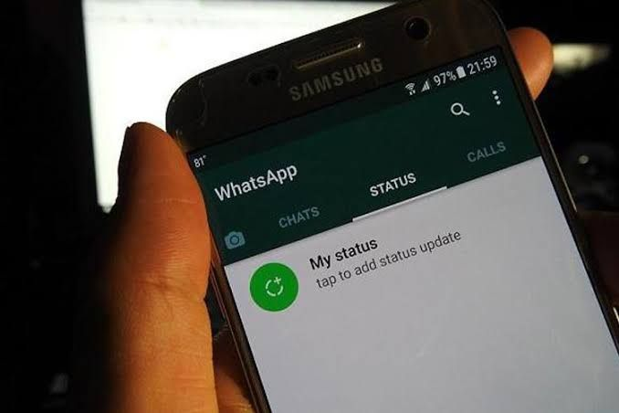

#Tip പച്ച ആപ്പിലെ എമർജൻസി സിറ്റുവേഷൻ... Part 3
ചോദ്യം: അബദ്ധത്തിൽ ഒരു ഫോട്ടോയോ വീഡിയോയോ (you know what I mean) വാട്സാപ്പ് status ആയിപ്പോയി എന്നു കരുതുക.അപ്പൊ തന്നെ അത് ഡിലീറ്റും ചെയ്തു. ആളുകൾ അത് കാണാൻ സാധ്യതയുണ്ടോ?
ഉത്തരം: FM, GB, YO പോലുള്ള modded വാട്സാപ്പുകളിൽ deleted messages & deleted statuses കാണാൻ കഴിയുന്ന ഫീച്ചർ ഉണ്ട്.
So, ഡിലീറ്റ് ചെയ്താലും ഇത്തരം ആപ്പുകൾ ഉപയോഗിക്കുന്നവർ contact ലിസ്റ്റിൽ ഉണ്ടെങ്കിൽ അവർ കാണാൻ സാധ്യതയുണ്ട്.
ചോദ്യം: അപ്പൊ എന്തു ചെയ്യും?
ഉത്തരം: ഒന്നും നോക്കാനില്ല, വാട്സാപ്പ് അക്കൗണ്ട് അങ്ങു ഡിലീറ്റ് ചെയ്യുക.
(WhatsApp settings > account > delete my account.)
ആ സ്റ്റാറ്റസ് പിന്നെ ആരും കാണില്ല.
ചോദ്യം: ഇങ്ങനെ ചെയ്താൽ ഗ്രൂപ്പുകളിൽ നിന്നൊക്കെ ലീവ് ആവില്ലേ? ചാറ്റ് ഒക്കെ പോവില്ലേ?
ഉത്തരം: ആവും, പോവും. ഗ്രൂപ്പ് മെമ്പർഷിപ്പ് ആണോ അതോ അഭിമാനം ആണോ വലുത് എന്ന് ചിന്തിച്ചതിനു ശേഷം ഉചിതമായ തീരുമാനം എടുക്കുക.
ചോദ്യം: ഈ ട്രിക്ക് ഗ്രൂപ്പിൽ അറിയാതെ അയച്ച മെസ്സേജിനും പ്രയോഗിക്കാമോ?
ഉത്തരം: പറ്റില്ല. അക്കൗണ്ട് ഡിലീറ്റ് ചെയ്താലും ഗ്രൂപ്പിൽ നമ്മൾ അയച്ച മെസ്സേജ് ഒന്നും പോവില്ല.
ചോദ്യം: അപ്പൊ അങ്ങനെയുള്ള സിറ്റുവേഷനിൽ എന്തു ചെയ്യും?
ഉത്തരം: മെസ്സേജ് പറ്റുമെങ്കിൽ delete for everyone കൊടുക്കുക.
(ഗ്രൂപ്പിൽ moded വാട്സാപ്പ് users ഉണ്ടെങ്കിൽ ഇതുകൊണ്ട് പ്രത്യേകിച്ച് ഗുണം ഒന്നുമില്ല.)
എന്നിട്ട് താഴെ കാണുന്ന മെസ്സേജ് ഗ്രൂപ്പിൽ കോപ്പി paste ചെയ്യുക:
(thazheyulla message nu kadappad: arjun karthikeyan)
"Dear friends...
ഇന്നലെ എൻ്റെ മൊബൈലിൽ ഒരു link വരുകയും ഞാൻ അതിൽ അബദ്ധവശാൽ ക്ലിക്ക് ചെയ്യുകയും ചെയ്തു. ശേഷം എൻ്റെ whatsApp logout ആയി. 1 മണിക്കൂർ കഴിഞ്ഞപ്പോ എൻ്റെ ഫോണിൽ നിന്നും പലർക്കും WhatsApp സന്ദേശം കിട്ടിയതായി പലരും പറഞ്ഞു. പിന്നീടുള്ള പരിശോധനയിൽ എൻ്റെ ഫോണിലെ WhatsApp web വഴി ആർക്കോ connect ആയതായി ശ്രദ്ധയിൽപ്പെട്ടു. എൻ്റെ നമ്പറിൽ നിന്നും നിങ്ങൾക്ക് ഏതെങ്കിലും messages വന്നിട്ടുണ്ട് എങ്കിൽ അത് എൻ്റെ അറിവോടെയല്ല. ദയവു ചെയ്ത് ഇതുപോലെയുള്ള അനാവശ്യ ലിങ്കുകളിൽ ക്ലിക്ക് ചെയ്ത് എൻ്റെ അവസ്ഥ വരാതിരിക്കാൻ ശ്രദ്ധിക്കുക."
അല്ലെങ്കിൽ genuine ആയി ക്ഷമാപണം നടത്തുക. ഉപകാരപ്പെടുന്ന ഗ്രൂപ്പിൽ ഒക്കെ വാട്സാപ്പ് ബോംബ് ഇട്ട് ബാക്കിയുള്ളവർക്ക് ബുദ്ധിമുട്ട് ഉണ്ടാക്കാതെ മാതൃകയാവുക.
ശുഭം!
PS: part 1 ഉം part 2 ഉം ഇല്ല. ഒരു പഞ്ചിന് part 3 യിൽ നിന്നു തുടങ്ങിയതാണ് 😁🤙
DeOn